我只说了四句话，WorkBuddy 让一间教室经历了四种结局
我用 Blender 官方示例场景做了一次工作流实测：全程通过 WorkBuddy 下达指令调整场景参数；失重、荒废、洪水三段动画各 96 帧、共 288 帧，通过 Renderbus CLI 直接提交云端渲染任务。本地渲一张静帧的时间，云端可以并行推进这 288 帧的渲染，本机显卡得以空出来继续打磨下一组镜头。


本地调静帧，云端跑序列
三个镜头调整静帧效果后逐一上传到 Renderbus，洪水镜头刚提交到 Renderbus，我便切回本机调整后期效果。5 分钟后向 WorkBuddy 查询渲染进度：失重与荒废两段已经完成，洪水也渲染到了第 59 帧。三段合计 288 帧全部完成后，最终成片如下。
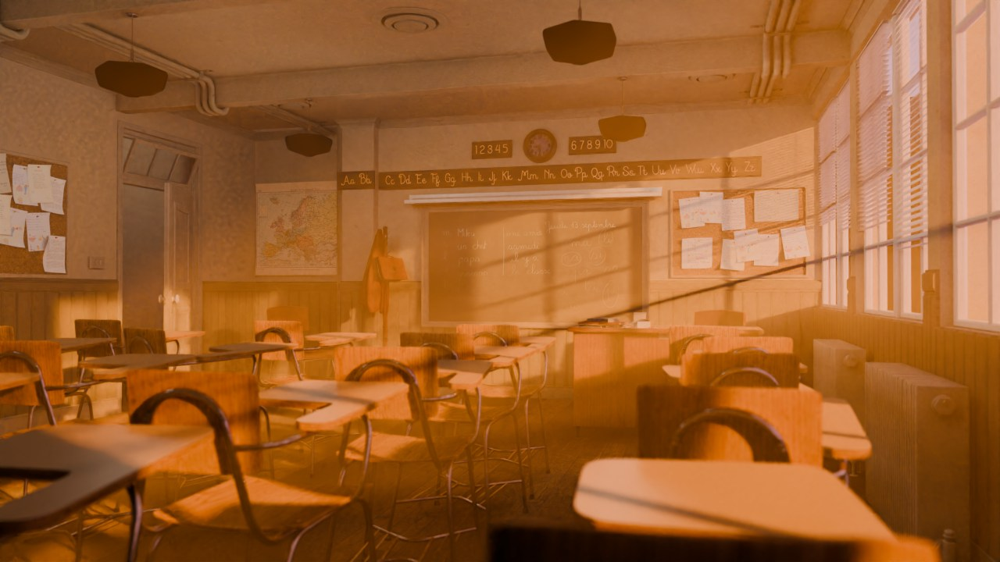
基准场景：改造前的教室
使用过 Blender 的小伙伴，应该可以看出基础工程取自 Blender 官方示例《Classroom》。改造过程中保持原有建筑结构与机位不变，先从光线变化切入测试。

灯光试水与失重构图
「把下午改成黄昏。」
这一步重点观察窗边夕阳光的光影效果。我让 WorkBuddy 保持机位不变、压低太阳高度角，先在本地输出一张静帧确认光影方向。
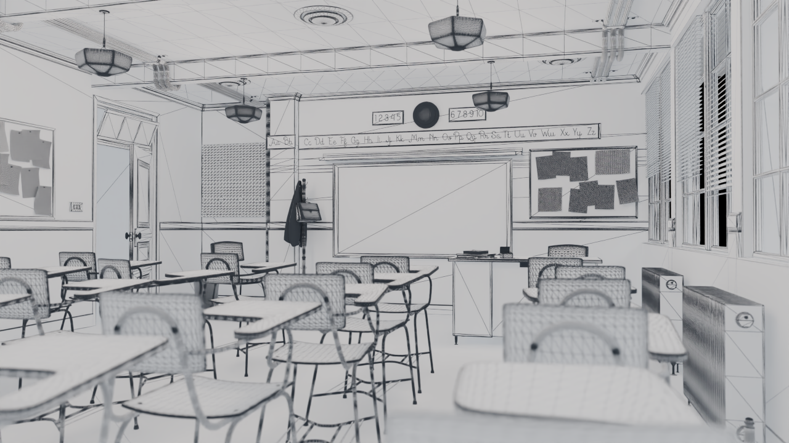
渲染效果 白模 · 布线首次执行时，任务虽然返回完成，输出目录里却没有生成图片。排查后发现是保存路径不完整，WorkBuddy 补全路径重新渲染后，才顺利拿到预览图。
看 WorkBuddy 对话（黄昏）

「让桌椅都飘起来。」
如果教室里的桌椅全部同时失重浮空，画面会失去地面参照。试过几版后，我保留前排桌椅落在地面稳住空间关系，只让后排分批离地升起。
看 WorkBuddy 对话（失重）
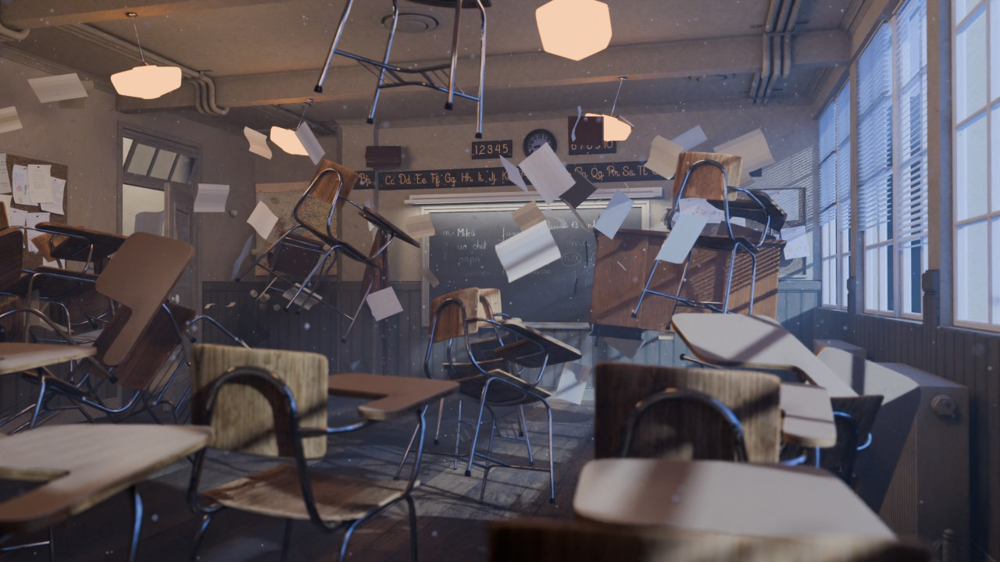
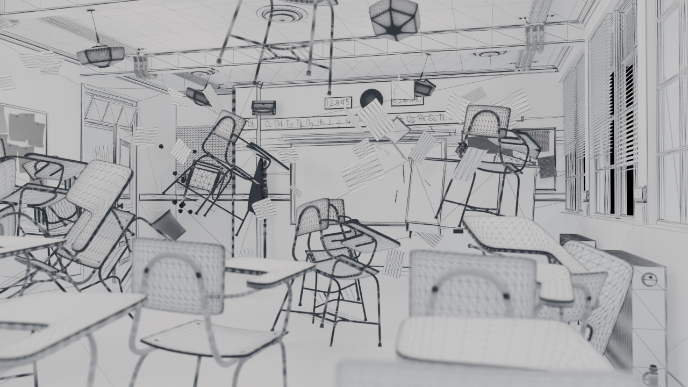
渲染效果 白模 · 布线96 帧序列交给云端渲染
4 秒动画按每秒 24 帧计算需要输出 96 帧，只有跑完完整序列，才能看清桌椅分批离地的最终实际效果。工程定稿后，WorkBuddy 调用 Renderbus CLI 完成场景分析，并将工程与资产一并上传，生成渲染任务。
失重与荒废率先完成渲染，拉回本地后我抽检了第 1、48、96 帧，确认画面衔接正常。下方可切换查看三段云端成片、抽帧与任务完成截图。
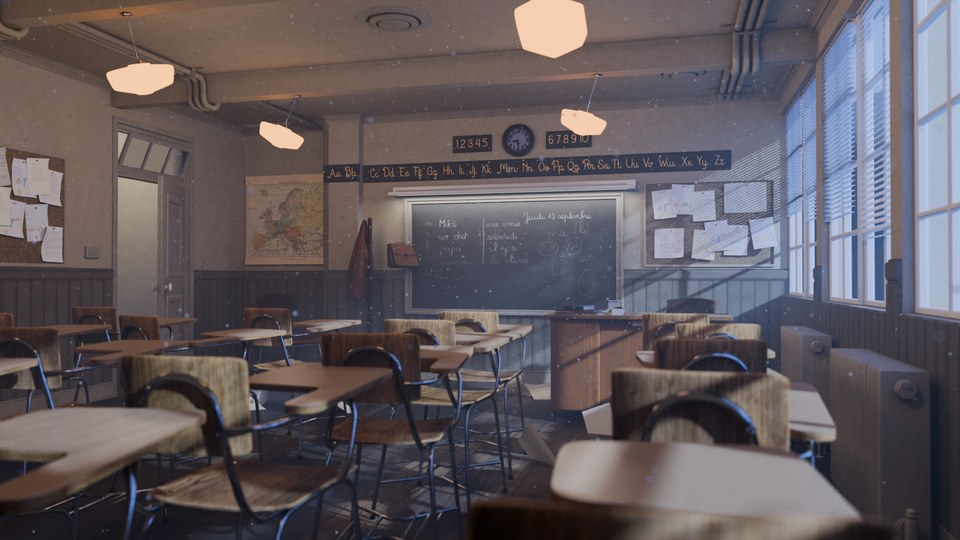
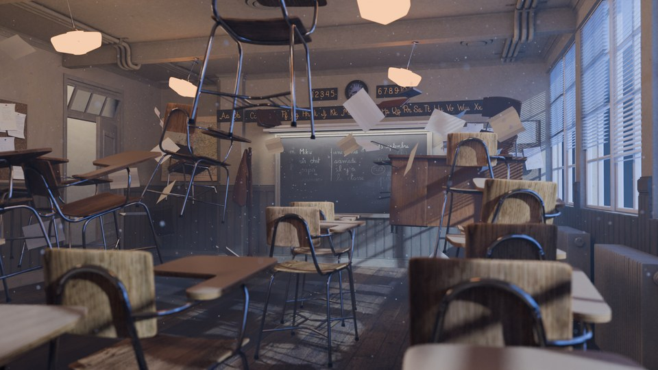
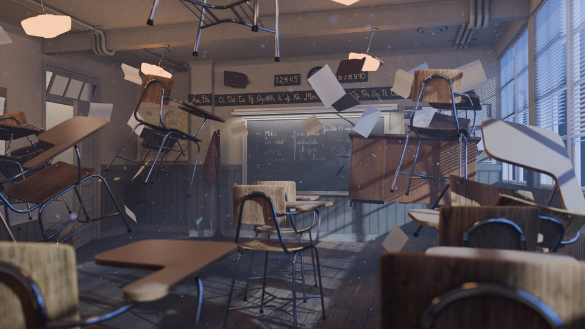
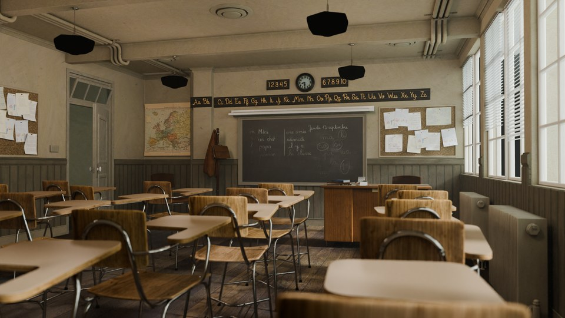
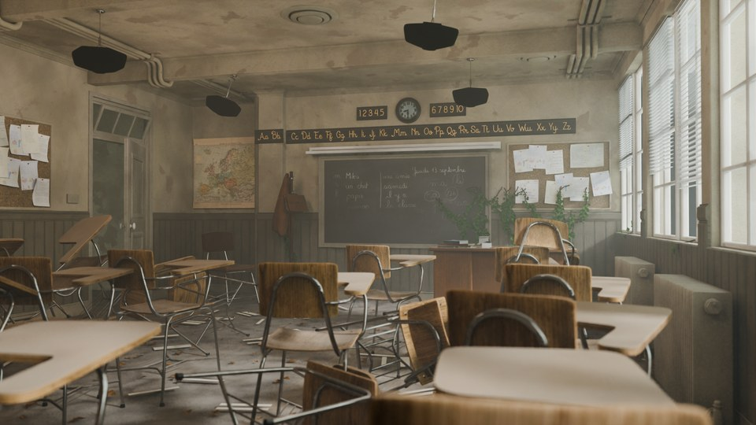
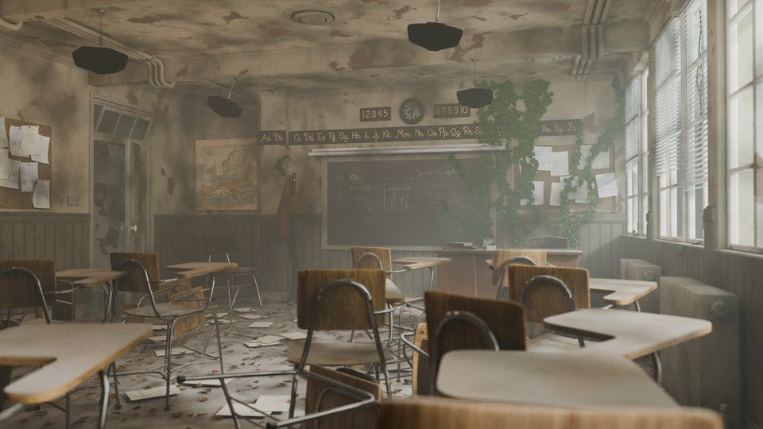
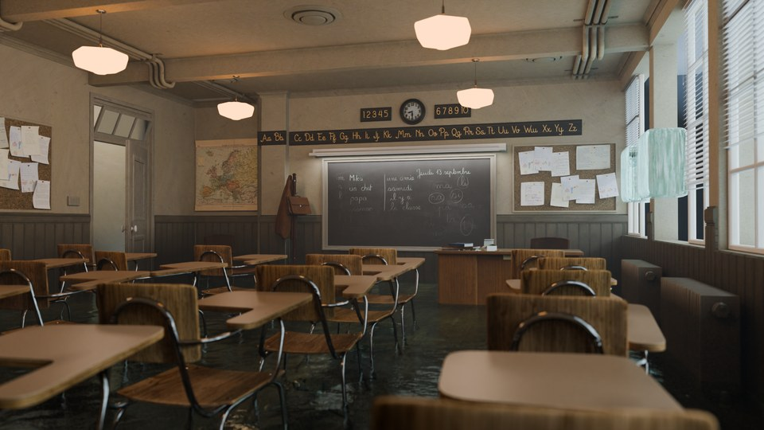
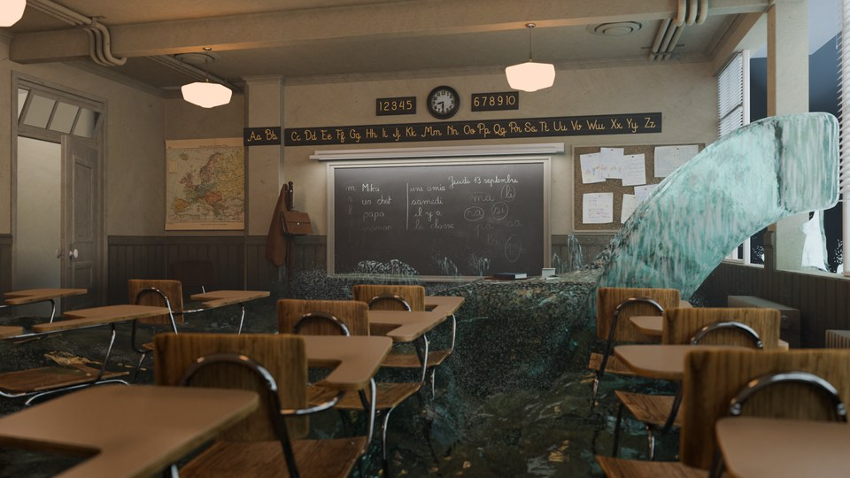
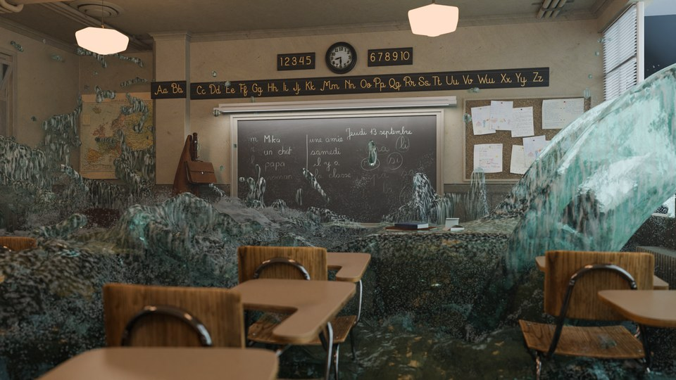
对话内查进度与拉取成片
下面保留了当时的对话和命令回执。点「查询进度」可以看到三个镜头各自完成了多少帧，点「下载抽帧」可以看到失重和荒废的帧序列怎样回到本机。
引号内为 WorkBuddy 会话节选；其他文字为工具记录摘要。命令略去外层脚本、本地绝对路径及作业 ID；独立复查单独标注。时间为北京时间，进度不是实时数据。
时间推移与流体测试
「让这里像很久没人来过。」
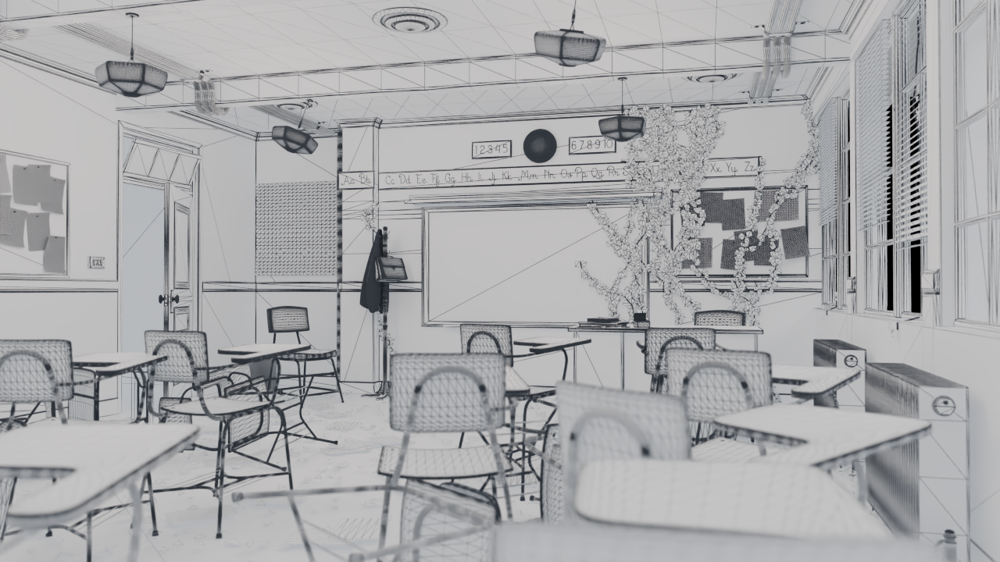
渲染效果 白模 · 布线第一版虽然做了旧化处理，但桌椅排列过于整齐，观感更接近刚放暑假，而非长期荒废。于是保持机位不变，让几把椅子倒伏在过道，再让藤蔓从右侧窗口一路蔓延到黑板旁，空间的衰败感才真正立住，观众看着不烧心。

「把教室淹了。」

定稿提交时，Blender 烘焙出的 384 个流体缓存文件由 WorkBuddy 自动分为四批上传，全部传齐后再交由 Renderbus 正式渲染。
看 WorkBuddy 对话（洪水）
控制飞沫密度，理清水流层次
第一版流体模拟中，白色飞沫过密，几乎把课桌腿完全遮住，水体走向难以辨认。随后降低飞沫量并同步微调镜头与水势大小，水流从窗口涌入、沿过道推进的层次才清晰呈现。
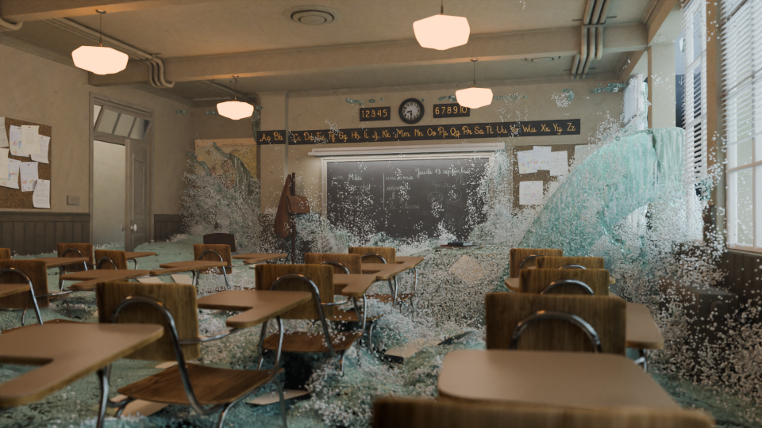
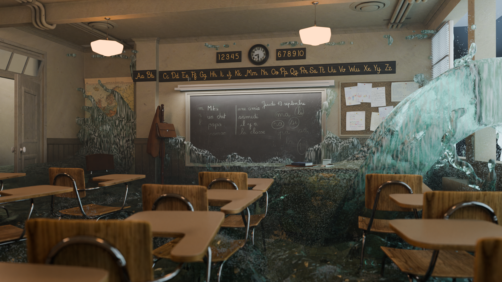
额外探索 · 未来教室
延伸测试：将教室改造成轨道实验室
完成前四组镜头后，我顺带做了一次风格跨度更大的尝试——把同一间教室改造成太空轨道实验室。初期方案偏赛博霓虹风格，后续逐步收敛到金属墙板、桌面终端与天体仪等结构细节，最终定稿为偏写实的轨道实验舱，并复用之前的 WorkBuddy 流程，调用 CLI 工具提交到 Renderbus 渲染成片。效果过程如下。
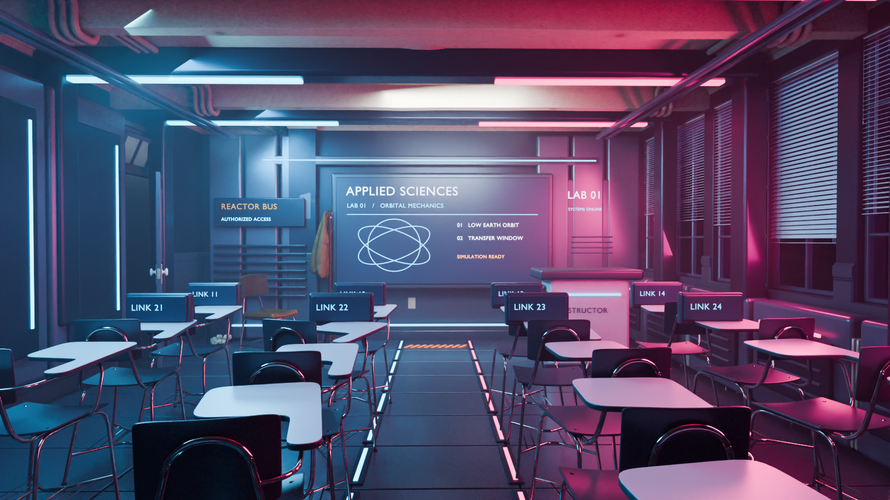
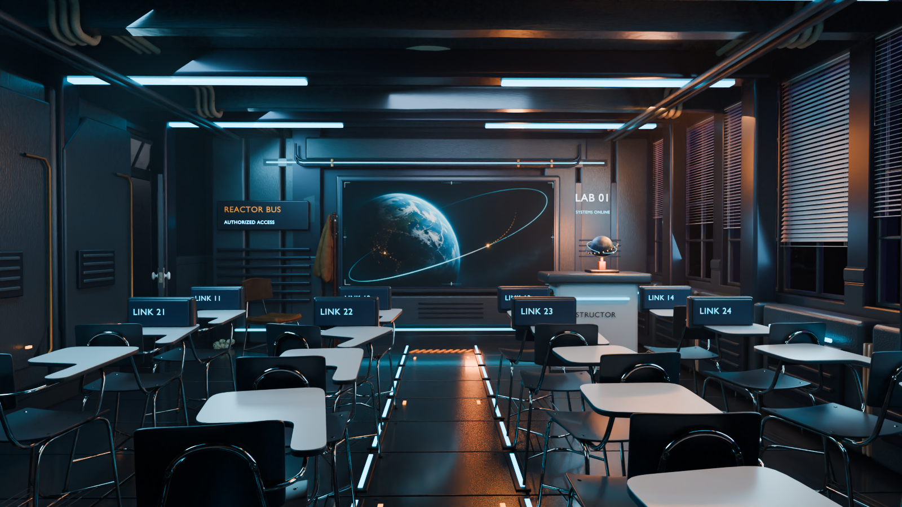
你想让 WorkBuddy 实现什么创意？
试试 WorkBuddyRenderbus 云渲染
把 Blender 工程渲染成片
预览确认后，把准备好的工程交给 Renderbus，输出正式图片或动画。
用 Renderbus 渲染我的项目 Renderbus CLI指南- 用 WorkBuddy 调整场景
- 在 Blender 确认预览
- 交给 Renderbus 渲染